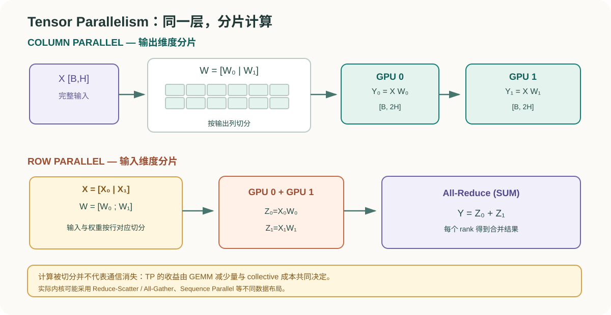

第 19 章 · 并行计算与高级推理
Tensor Parallelism：为什么把一个矩阵拆到多张 GPU？
从矩阵维度出发理解 ColumnParallelLinear、RowParallelLinear、All-Reduce 与 TP 的通信/显存取舍。
一张 GPU 放不下模型时，我们希望把一层线性变换拆成几块，让多张 GPU 共同计算。真正重要的不是“多卡更快”，而是矩阵如何切分、哪些中间结果必须同步，以及为什么 GPU 互联决定了 TP 的收益。
学习目标
- 在二维矩阵上手算列并行与行并行。
- 区别 All-Gather、All-Reduce 与 Reduce-Scatter。
- 解释 Prefill 与 Decode 下 TP 的通信成本区别。
- 知道如何在 vLLM 源码中定位并行线性层。

19.1 一层矩阵为何放不进单张 GPU？
假设某线性层权重为 W ∈ R^(8192×32768)，如果使用 BF16，仅该矩阵就占 8192 × 32768 × 2 ≈ 537 MB（十进制），还不包括其他层、KV Cache、激活、工作区和 CUDA Graph。把一个大模型拆给多张 GPU 不是“每张卡运行一个独立模型”，而是多张卡共同完成同一请求、同一层的计算。
Tensor Parallelism（TP）将部分线性层权重按张量维度分片，每个 GPU 计算局部矩阵乘法。数学上等价于原始操作，但计算中引入通信，这正是其收益与代价的共同来源。
19.2 列并行：输出特征维度拆开
采用行向量记法，输入 X ∈ R^(B×H)、权重 W ∈ R^(H×4H)。两张 GPU 按输出维度切开：
W₀, W₁ ∈ R^(H×2H)，每张卡得到 Yᵢ ∈ R^(B×2H)。如果后续算子（如分片的门控/激活）可以直接使用局部结果，不必立刻 all-gather；但若下游要求完整输出，则需要 All-Gather 聚合。
在 Transformer MLP 中，通常先使用 ColumnParallelLinear 得到分片的中间激活，再由 RowParallelLinear 把局部结果投影回 hidden size。两步组合减少在中间扩维位置汇集大张量的次数。
# 纯数学示意，与具体 tensor layout / fused kernel 无关
# X: [batch_tokens, H]; W0/W1: [H, 2*H]
Y0 = X @ W0 # GPU 0
Y1 = X @ W1 # GPU 1
Y = concat([Y0, Y1], dim=-1) # 仅在下游需要全量输出时19.3 行并行：输入维度拆开后求和
第二个线性层使用 W ∈ R^(4H×H)，按输入特征分片：W = [W₀; W₁]，对应输入也分成 X = [X₀ | X₁]。原始矩阵乘法等于各 rank 局部结果之和：
各 rank 得到同形状 Yᵢ ∈ R^(B×H)；为了让后续层看到一致的输出，必须执行求和归约，例如 All-Reduce，或在使用分片输出的实现中采用 Reduce-Scatter。这不是“复制一份输出”，而是把不同输入分片的贡献相加。
注意有些变体（Sequence Parallelism、Reduce-Scatter/All-Gather Fusion）会改变数据布局和通信时机。讨论 RowParallelLinear 时，必须同时核对 input_is_parallel、reduce_results 等参数，不能把所有层都画成一次固定 All-Reduce。
19.4 All-Reduce 的成本从哪里来？
每个 rank 本地 GEMM 的工作量可以减少，但通信并不会消失。对理想化 ring all-reduce，若有 p 个 rank、待归约张量大小 S 字节，通信字节数每 rank 近似为 2(p−1)S/p（忽略协议、拓扑与分块细节）：
长 Prompt 的 Prefill 常包含更大的矩阵乘法，计算分摊可能更划算；逐 token Decode 的 GEMM 规模较小，通信延迟和同步开销可能更显著。NVLink / NVSwitch、PCIe、InfiniBand、NIC 拥塞和机内/跨机拓扑都会改变结果。
性能判断：如果模型能装进一张 GPU，TP 通常不是自动更快的选择。先比较单卡基线，再增加 TP=2/4，分别记录 TTFT、ITL/TPOT、输出吞吐、显存和 collective 时间。
19.5 vLLM 里的模块与部署参数
上游源码中的 ColumnParallelLinear、RowParallelLinear、QKVParallelLinear 和 MergedColumnParallelLinear 等封装了不同切分逻辑；分布式组由 vllm/distributed/parallel_state.py 管理。TP rank 不是彼此独立接单的服务副本，而是由一个执行请求的模型副本协调运行。
# 前提：已确认模型支持、GPU 内存足够、设备间通信可用
vllm serve <model-id-or-path> --tensor-parallel-size 2
# 若需跨节点，优先实测或评估 TP=每节点卡数、PP=节点数
vllm serve <model-id-or-path> --tensor-parallel-size 4 --pipeline-parallel-size 2在权重加载时还需要核对 QKV 的 head 数、KV heads 和分组查询注意力（GQA）的切分要求；模型的 quantization kernel、注意力实现和设备类型可能制约可用 TP 值。
19.6 常见误区与决策
- 误区：TP=8 就是八倍吞吐。反例：Decode 阶段 collective 同步和串行环节仍在，每张 GPU 同时占据资源。
- 误区：All-Gather 和 All-Reduce 可互换。前者拼接不同分片，后者对同形数据做归约；其输入形状与输出语义不同。
- 误区：TP 一定跨机器。优先考虑高速互联的单节点；跨节点 TP 会把频繁通信搬上网卡。
- 误区：均分权重就均分全部显存。KV Cache、通信缓冲和临时张量的分布仍要测量。
建议测量矩阵：TP=1、2、4，固定模型/精度、Prompt 与输出分布，逐项比较容量是否足够、首 token 时间、每 token 时间和成本 / token。只有数据支持时才提高 TP。
本章自检
- 为什么列并行的线性层可以先不 All-Reduce，而行并行往往需要对局部结果求和？
- TP=4 是否意味着每个 token 的吞吐一定提升四倍？为什么？
- 为什么多个 TP rank 要共同组成一个逻辑 replica？
- 如何用实测通信成本判断是否应跨节点使用 TP？
参考资料与源码入口
- Parallelism and Scaling：单机 TP、跨节点 TP+PP 与网络互联建议
- Parallel linear layers：列并行、行并行和 QKV 特殊切分
- Distributed parallel state：TP 进程组与 collective 管理
- Megatron-LM：Transformer 层内切分的经典研究
审校基线：vLLM e72fc9ae50c221180c4b8f4a94c5009714a4b199（2026-11-22）。示例为教学示意；实际模型、GPU 拓扑和运行版本必须单独验证。